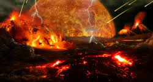
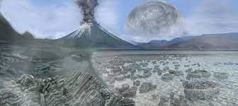
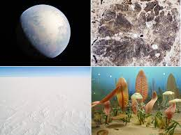
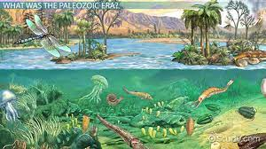
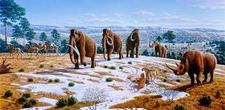

Hadean Eon
4,560 - 4,000 myaEarly Earth formation, first water.

Archean Eon
4,000 - 2,500 myaSingle-celled life traces, first oxygen. Photosynthesis.

Proterozoic Eon
2,500 - 538.5 myaMulti-celled life traces, atmospheric oxygen. Global glaciations.

Paleozoic Era
538.5 - 252.17 myaModern complex life appearance.
Mesozoic Era
252.17 - 66 myaFirst mammals and dinosaurs.

Cenozoic Era
66 - 0 myaMammal dominance. Eocene thermal maximum.